Lapland
The Arctic Winter Experience
The Arctic Winter Experience
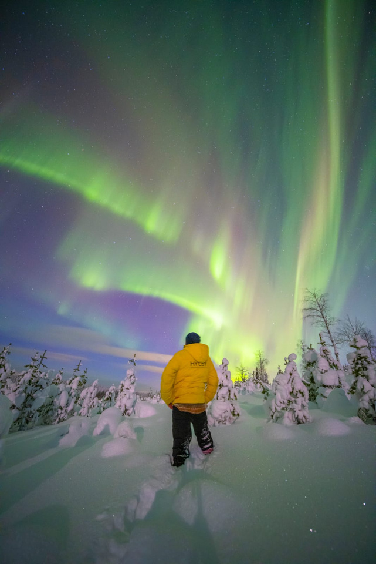
Above the Arctic Circle, where the Northern Lights dance across endless skies and pristine wilderness stretches in every direction. Finland — the world's happiest country — at its most magical.
Finnish Lapland sits directly under the auroral oval — one of the best places on Earth for Northern Lights. From September through March, the long polar nights and pristine Arctic air create ideal viewing conditions across all our destinations.
We offer dedicated aurora hunts by snowmobile, reindeer sleigh, and on foot — led by expert guides who know the best viewing spots. Or simply watch the lights dance from the warmth of a glass-roofed cabin.
With over 200 aurora nights per year, the question isn't whether you'll see them — it's how many times.
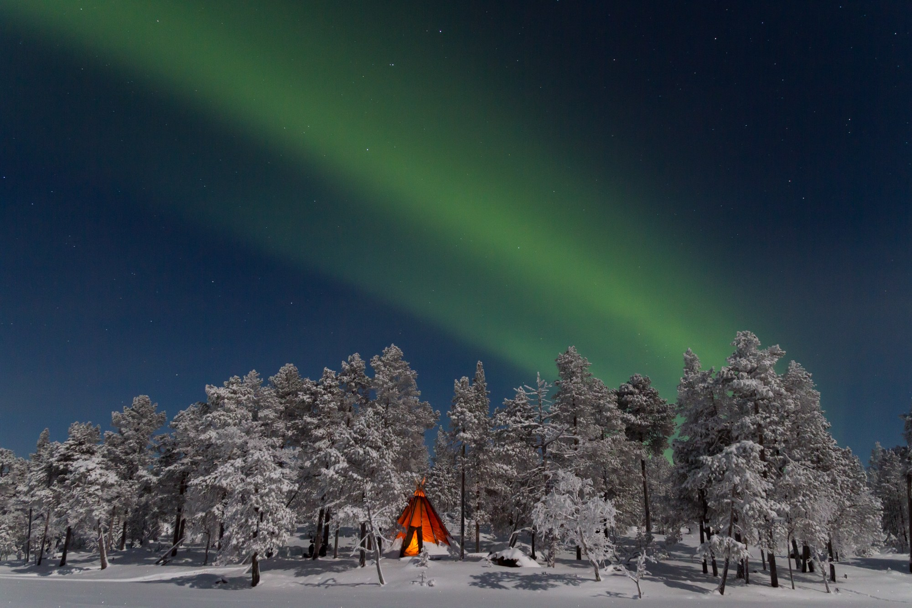
Finnish Lapland is surprisingly accessible. Direct flights from major European cities reach three Arctic airports, with short transfers to all destinations.
Season: November – April (peak aurora: Sep – Mar, peak snow: Dec – Apr)
We arrange all transfers, meet-and-greet services, and VIP airport handling.
Levi — Lapland's Largest Resort
Finland's #1 ski resort. 43 slopes, 230 km cross-country trails, vibrant village with 60+ restaurants. Home to Lapland Lodge and Villa Lumi luxury properties.
Saariselkä — Gateway to the Wilderness
Urho Kekkonen National Park. Famous glass igloos, gold panning heritage, fell hiking. The most northern ski resort in Finland.
Pyhä-Luosto — Untouched & Authentic
One of Finland's oldest national parks. Amethyst mine, traditional reindeer herding, intimate atmosphere. For clients who want the real Arctic.
Rantasalmi — Järvisydän — Finnish Lakeland Winter
Järvisydän Resort on Lake Saimaa. Glass-roofed Kota suites, ice fishing on frozen Saimaa, snowshoeing, smoke sauna, and Saimaa ringed seal spotting — one of Finland's top winter experiences.
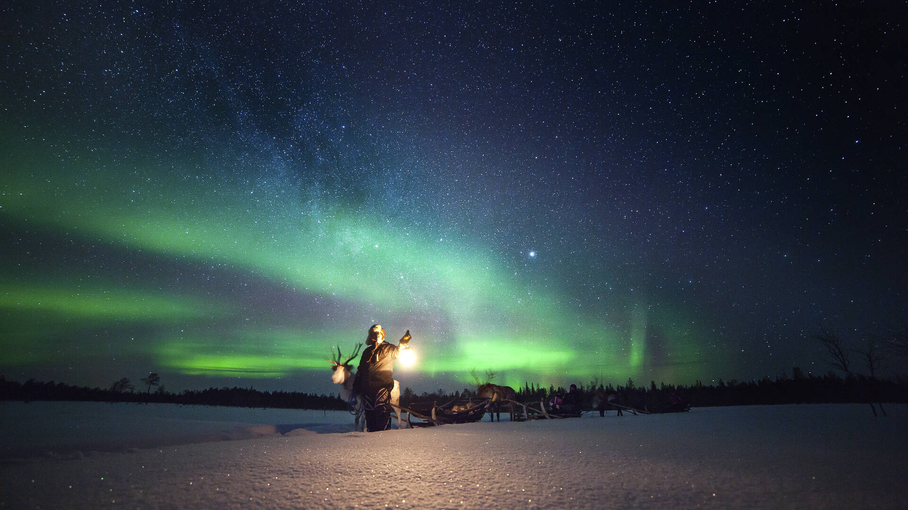
Curated winter activities across all four destinations
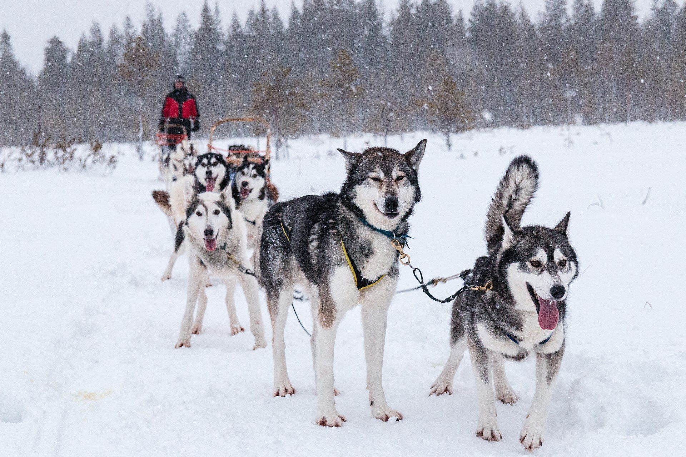
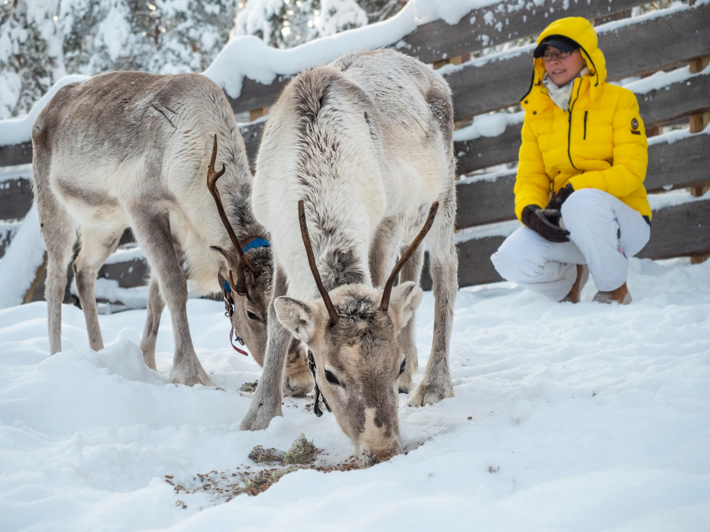
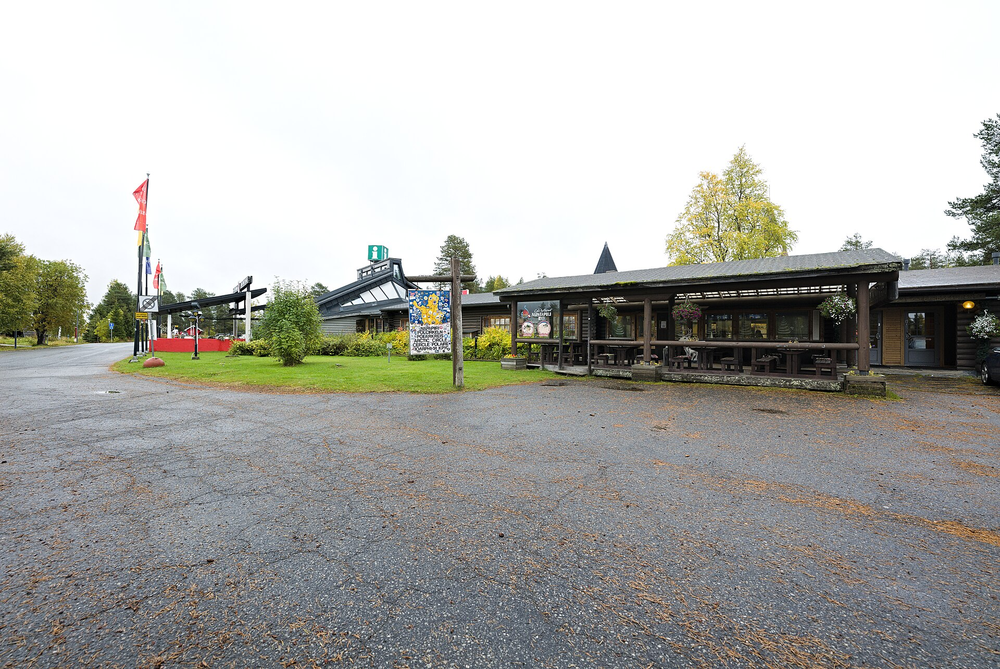

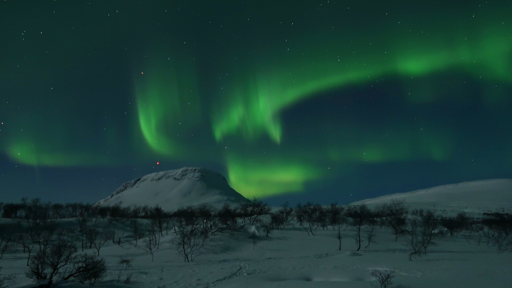
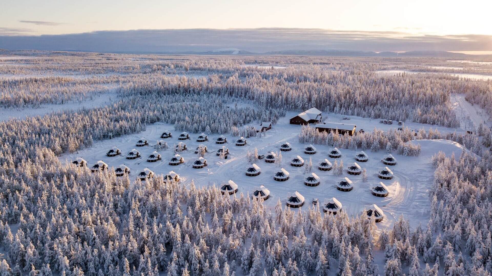
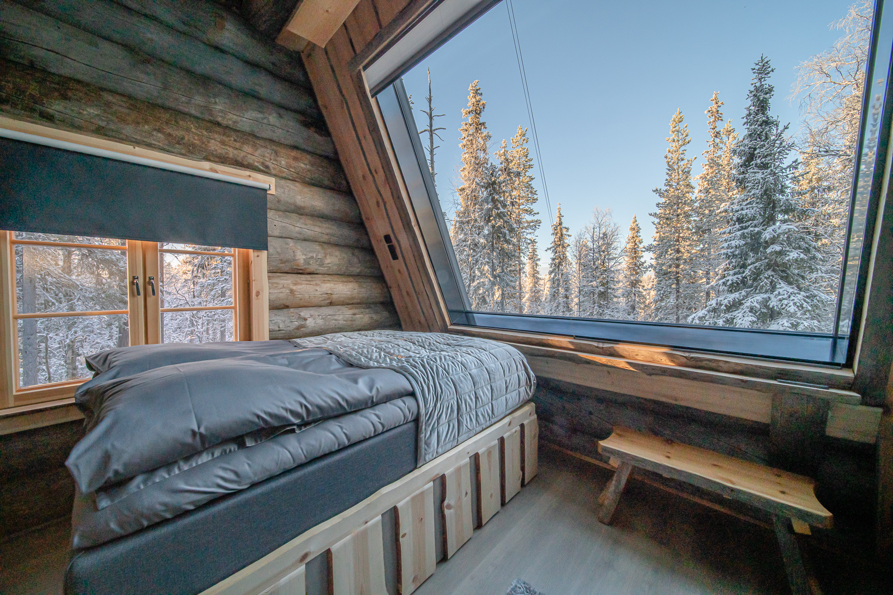
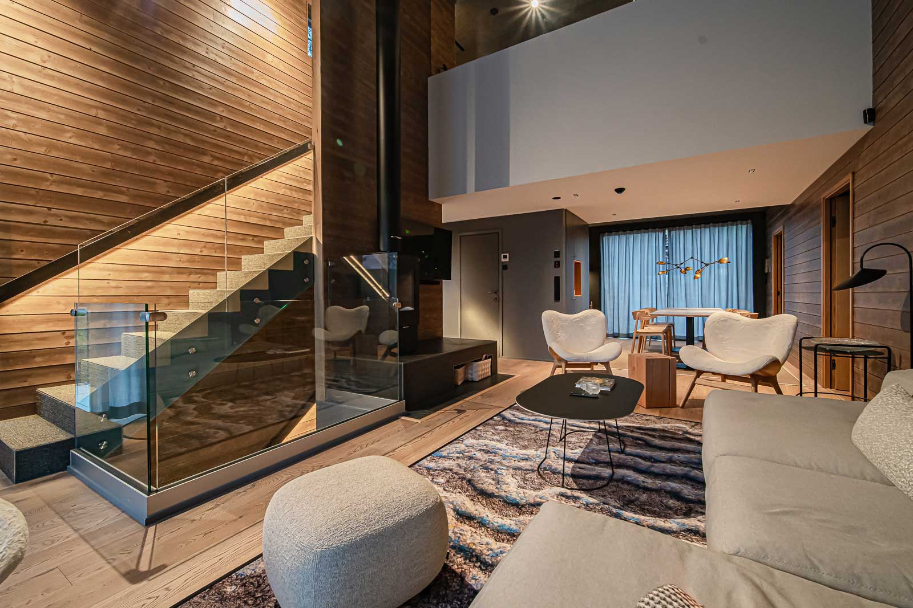
From private wilderness retreats to contemporary ski-in/ski-out villas, our Lapland portfolio offers exceptional accommodation for every group type.
Lapland Lodge Resort — Private wilderness retreat, max 12 guests. Traditional log construction, aurora skylights, crackling wood sauna deep in the Arctic forest.
Villa Lumi Collection — Modern design villas in Levi. 2–10 guests, private hot tubs, ski-in access, designer interiors. Perfect for incentives.
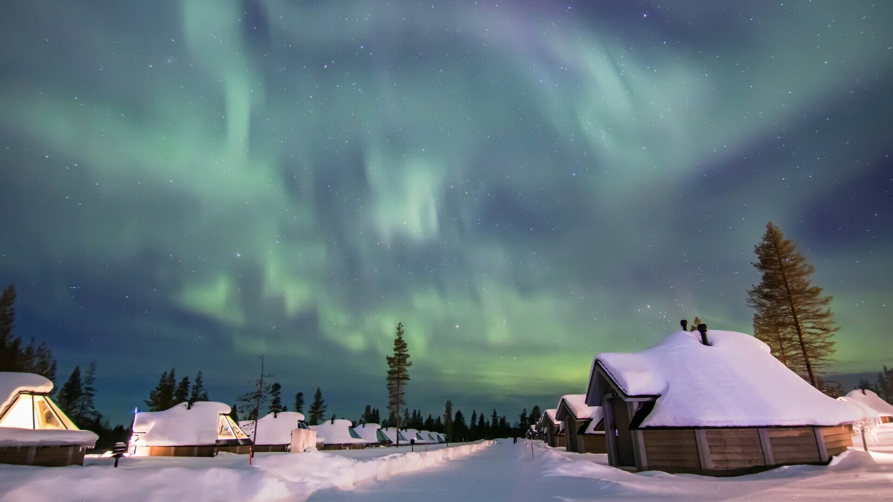
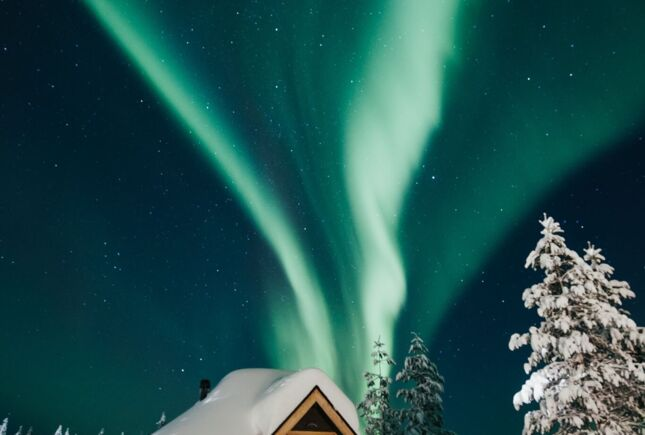
Sleep under the Northern Lights in a glass-roofed cabin — one of Finland's most iconic experiences. Available across Saariselkä, Levi, and Järvisydän Resort on Lake Saimaa.
From intimate glass igloos for couples to panoramic aurora suites, these unique stays combine warmth and comfort with unobstructed sky views. Fall asleep watching the stars; wake to a snow-covered forest.
These are among the most sought-after rooms in all of Finland — we recommend booking early for peak aurora season.
Not all of Finland's magic is above the Arctic Circle. Järvisydän Resort on Lake Saimaa — one of Finland's top winter destinations — offers a completely different kind of wilderness experience.
The frozen lake stretches to the horizon. Glass-roofed Kota suites glow against the winter sky. Ice fishing on Saimaa, snowshoeing through ancient forests, cross-country skiing, and the sacred ritual of the smoke sauna complete a winter stay unlike any other.
And for lucky visitors: a chance to spot the critically endangered Saimaa ringed seal — found nowhere else on Earth.
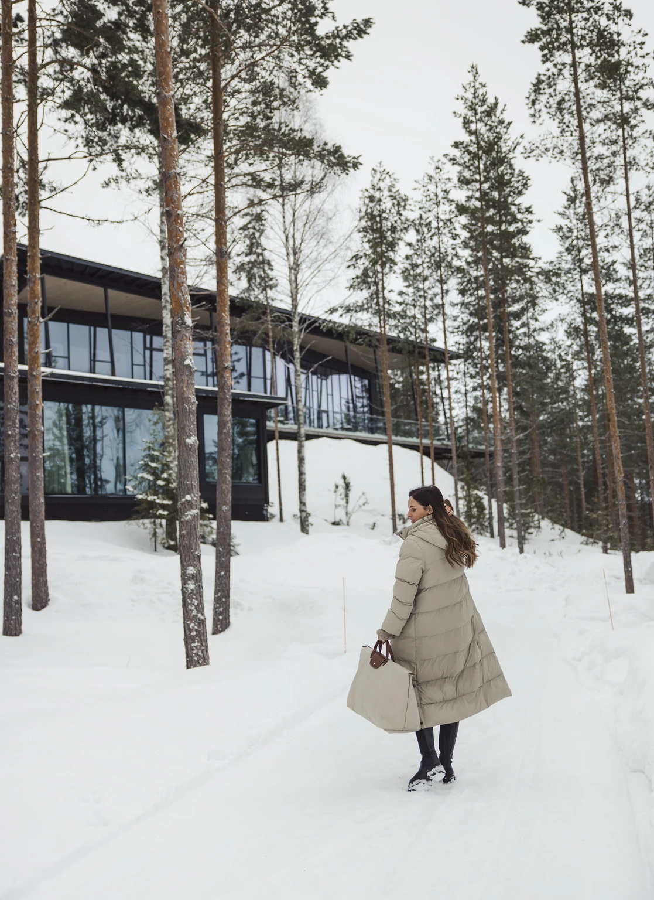
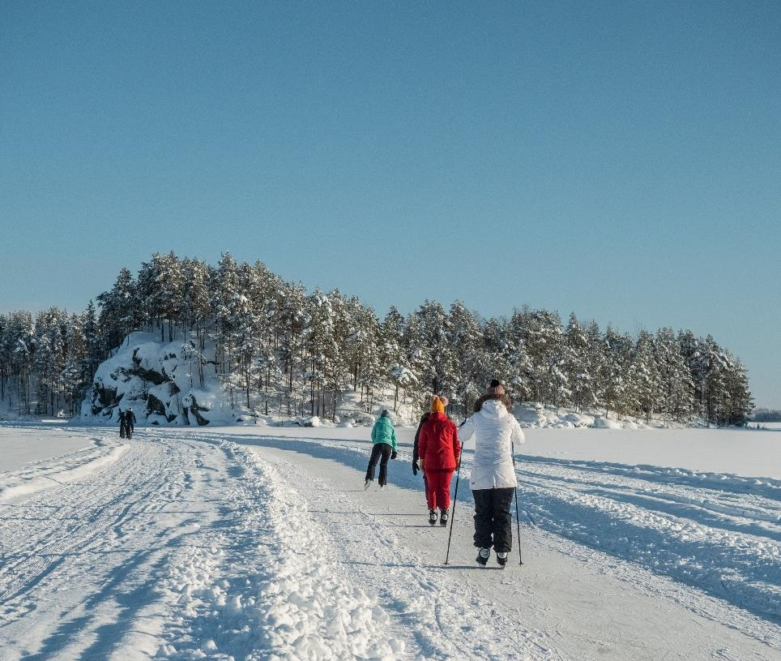
Programs from 2 to 7 nights, fully customizable — start with what you love and we build around it
Prices are indicative and vary by season, group size, and accommodation choice. Full custom quotations on request.
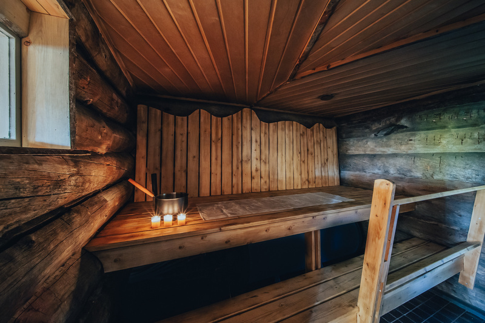
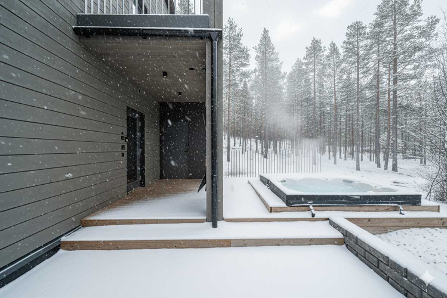
Finland has 3.3 million saunas for 5.5 million people. Sauna isn't a luxury — it's the heart of Finnish culture, a place for conversation, reflection, and renewal.
From crackling wood-fired log saunas to sleek designer wellness spaces, our Lapland properties offer both traditional and modern experiences. Pair with an Arctic ice swim or a private hot tub under the Northern Lights.
All itineraries fully customizable. 2–7 nights available across all four destinations.
We know hospitality.
Finland DMC is a specialist destination management company covering all of Finland — from the Arctic wilderness of Lapland to the thousand lakes of Saimaa and the design capital Helsinki.
We craft seamless, end-to-end travel experiences for international tour operators. Accommodation, dining, activities, transfers — we bring every element together into one memorable journey.
Finland DMC Lapland Winter 2026 v3.1